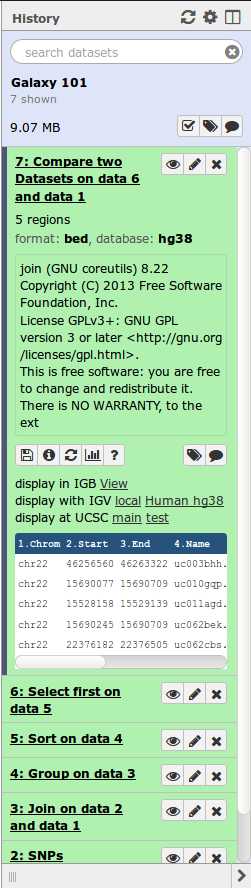
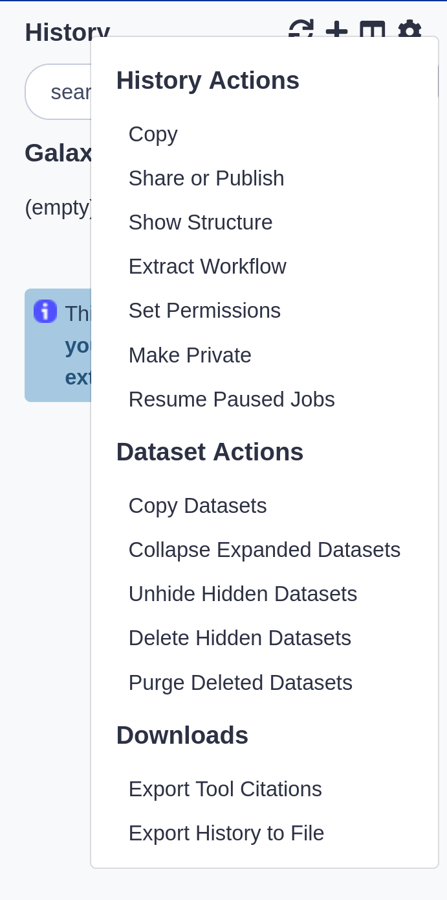

# What is Galaxy?
---
[](https://galaxyproject.org/)
- **Web-based** platform for computational biomedical research
- Developed at Penn State, Johns Hopkins, OHSU and Cleveland Clinic with substantial outside contributions
- **Open source** under [Academic Free License](https://opensource.org/licenses/AFL-3.0)
- More than 5,300 [citations](https://www.zotero.org/groups/1732893/galaxy)
- More than 80 [public Galaxy servers](https://galaxyproject.org/public-galaxy-servers/)
- Many more non-public
- Both general-purpose and domain-specific
???
- The Galaxy Team is composed by bioinformaticians and software engineers
- OHSU = Oregon Health & Science University
---
### Core values
- **Accessibility**
- Users without programming experience can easily upload/retrieve data, run complex tools and workflows, and visualize data
- **Reproducibility**
- Galaxy captures information so that any user can understand and repeat a complete computational analysis
- **Transparency**
- Users can share or publish their analyses (histories, workflows, visualizations)
- Pages: online Methods for your paper
Pages: interactive, web-based documents that describe a complete analysis.
???
**accessible** **reproducible** **transparent** research means sharing everything.
If the Galaxy framework makes everything as simple as possible, researchers are able to:
- share their analyses
- track all used tools and versions
- check all parameters
- justify each step in the analysis
- publish the findings with all aforementioned information
---
# User Interface
---
### Main Galaxy interface

Home page divided into 3 panels
---
### Top menu

- *Analyze Data* - go back to the 3-panels homepage
- *Workflow* - access existing workflows or create new one using the editable diagrammatic pipeline
- *Shared data* - access data libraries, histories, workflows, visualizations and pages shared with you
- *Visualization* - create new track browser and access your saved visualisations
- *Help* - links to Galaxy Biostar (Q&A), Galaxy Community Hub (Wiki), and Interactive Tours
- *User* – your preferences and saved histories, datasets, and pages
---
### Tool interface

---
### Tools
- Each tool is a text file describing:
- input datasets, parameters, commands, and outputs
- help, tests, citations, dependency requirements
- Free tool store: [Galaxy Tool Shed](https://toolshed.g2.bx.psu.edu/)
- Thousands of tools already available
- Every software can be embedded
- If a tool is not available, ask the Galaxy community for help!
- Only a Galaxy admin can install tools
- New versions can be installed without removing old ones to ensure reproducibility
???
A tool describes:
- the input datasets and their datatypes
- the tool parameters (numerical, text, boolean, selections, colour)
- how to generate a command to execute the tool with the specified inputs and parameters
- the output datasets the tool should produce and their datatypes
Tools can be viewed as tiny LEGO pieces: each one solves a specific problem, and they can be combined together to build complex analysis pipelines.
---
### History
- Location of all your analyses 
- collects all datasets produced by tools you run
- collects all operations performed on your data
- At the heart of Galaxy’s reproducibility
For each dataset, the history tracks:
- name, format, size, creation time, datatype-specific metadata
- tool id and version, inputs, parameters
- standard output (`stdout`) and error (`stderr`)
- state (waiting, running, success, failed)
- hidden, deleted, purged
???
We say datasets to refer to files as well as databases
Purged means permanently deleted
---
### Multiple histories
- You can have as many histories as you want
- each history should correspond to a **different analysis**
- and should have a meaningful **name**
---
### History options menu
- History behavior is controlled by the *History options* (gear icon) 
.image-25[]
- *Create New* history will **not** make your current history disappear
- To list all your histories, choose *Saved Histories*
- You can *Copy Datasets* from one history to another
- saves disk space and your quota
---
# Loading data
---
### Importing data
- Copy/paste from a file
- Upload data from a local computer
- Upload data from internet
- Upload data from online databases
- UCSC, BioMart, ENCODE, modENCODE, Flymine etc.
- Import from Shared Data (libraries, histories, pages)
- Upload data from FTP (>2GB)
See [Getting data into Galaxy](../tutorials/galaxy-intro-get-data/slides.html)
---
### Datatypes
- When uploading, datatype can be automatically detected or assigned by user
- For datasets produced by a tool, the datatype is assigned by the tool
- Tools only accept input datasets with the appropriate datatypes
- You can change the datatype of a dataset in 2 ways:
- Edit Attributes -> Datatype
- Edit Attributes -> Convert Formats
???
- Edit Attributes -> Datatype is used to fix a wrongly assigned datatype
- Edit Attributes -> Convert Formats creates a new dataset using a tool that converts the original dataset in the new format
- New datatypes can be added to the Galaxy code base, if missing
---
### Reference genomes
- Genome build specifies which genome assembly a dataset is associated with
- e.g. mm10, hg38...
- Genome build can be automatically detected or assigned by user
- User can define their own custom genome build
- New genome assemblies can be added by the site Galaxy admin
---
# Workflows
---
### Workflow interface

???
- Boxes are workflow steps
- 2 types: *input* and *tool* steps
- Steps are connected by arrows representing the flow of datasets
- Tool panel on the left with Inputs on top (to add input datasets and collections)
- Small tool form on the right
---
### Workflows
- Can be **extracted** from a history
- Allow to easily convert an existing history into an analysis workflow
- Can be **built manually** by adding and configuring tools using the workflow canvas
- Can be **imported** using an existing shared workflow
---
### Why would you want to create workflows?
- **Re-run** the same analysis on different input data sets
- **Change parameters** before re-running a similar analysis
- Make use of the workflow job **scheduling**
- jobs are submitted as soon as their inputs are ready
- Create **sub**-workflows: a workflow inside another workflow
- **Share** workflows for publication and with the community
---
### Data sharing
- You can share your Galaxy items - histories, workflows, visualizations, and pages - with other people in three different ways:
- Directly using a Galaxy account's email addresses on the same instance
- Using a web link, with anyone who knows the link
- Using a web link and publishing it to make it accessible to everyone from the *Shared Data* menu
- Tools are shared using the free tool store: [Galaxy Tool Shed](https://toolshed.g2.bx.psu.edu/)
---
### Data visualization
- Charts
- Each datatype can have some visualizations associated
- Track browser called Trackster
- To visualize genomic data in a tightly integrated way
---
### Community
- Be part of an active and friendly community
- Get support and your questions answered on [Galaxy Biostars](https://biostar.usegalaxy.org/)
- Access community curated documentation on [Galaxy Community Hub](https://www.galaxyproject.org/)
- Learn more about Galaxy for scientists and for developers and admins on [Galaxy Training Community]({{site.url}}/{{site.baseurl}})